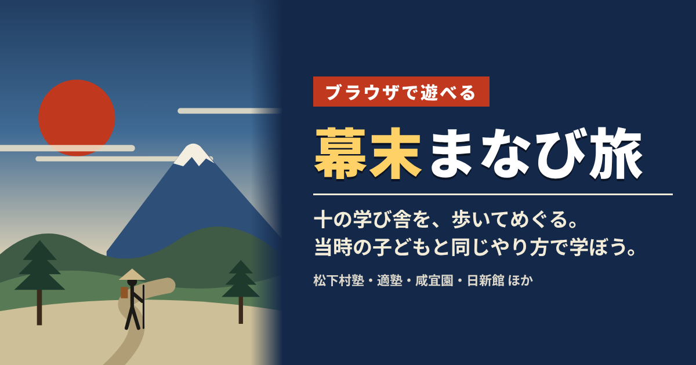
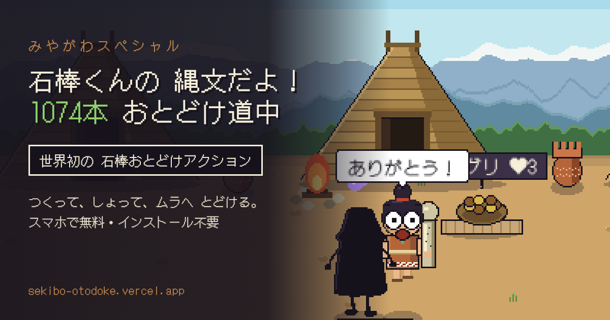
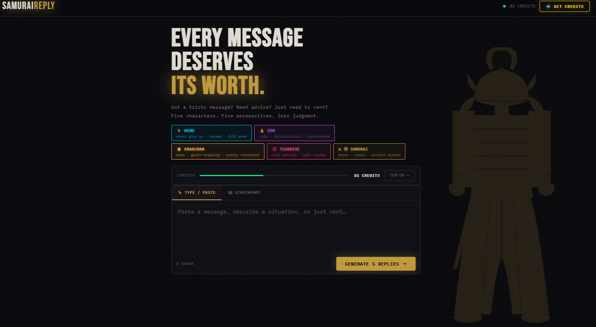
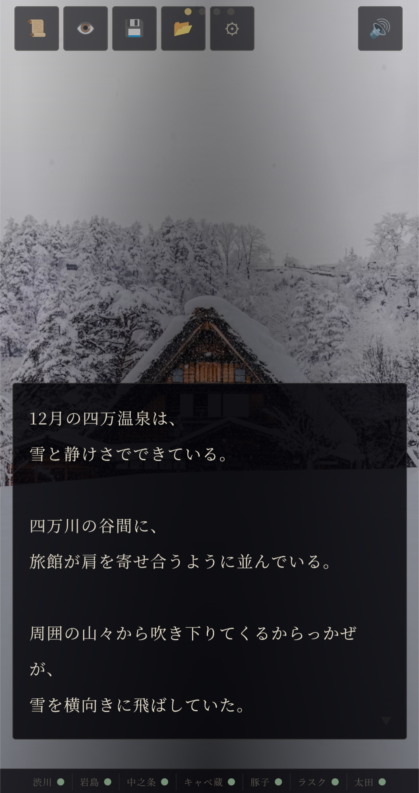
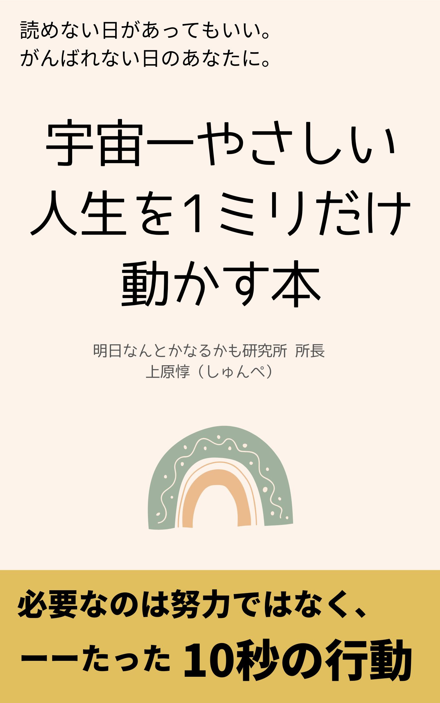

Historical Figures RPG
A collection of nine short, free-to-play, retro-style RPG episodes. Travel through the lives of historical figures, make choices, and discover the people behind the history.

A creator who helps people move forward, one millimeter at a time.
Independent creator Yorimichi Creative
01
Making ideas playable with AI, history, and a little curiosity.
A collection of nine short, free-to-play, retro-style RPG episodes. Travel through the lives of historical figures, make choices, and discover the people behind the history.
A 5×5 shogi game where famous figures from Japan’s Bakumatsu era become pieces. Learn the moves with beginner-friendly guides and challenge the computer.
After closing time, patrol an archaeology and folklore museum in this light horror story game. Discover clues and reach an ending. Currently a test release.
Become a kind-hearted thief and outrun the detective in a vertical 3D escape game with five stages.
The strongest hero in the world must defeat demons without being noticed. Blend into the crowd across six action stages.

A family-friendly journey through the people and events of Japan’s Bakumatsu period, with quizzes and interactive learning.

Explore the mountains, find stone rods, and deliver them to a museum in a playful browser adventure inspired by the 1,074 stone rods at Hida Miyagawa Archaeological Folklore Museum.

Scan barcodes on everyday objects to uncover stone-rod discoveries. Complete the collection of 211 entries.

A 14-chapter, 8-bit-style web RPG about a child who sets out to find a missing parent.

A gentle focus timer that checks in every 18 minutes. Keep going at your own pace.

An AI-powered web app that helps you draft replies in the voices of five samurai-inspired characters.

Music videos created by combining AI-generated music, images, and historical stories.
Sekibotyping, Sekibotris, stone-rod discovery games, and other browser experiments are available on Plicy.
02
Local stories, places, and culture turned into games and media.

A horror escape game set in Gunma. Solve quizzes and explore the prefecture while trying to survive.

A sound-novel mystery about a group of visitors stranded at a remote inn during a fierce winter wind.

A GPS and 8-bit collecting adventure. Explore Gunma and discover 120 local monsters.
Conversations about local life in Gunma and Saitama, with AI-generated voices.
03
Small steps count. Noticing tiny changes can help life move again.

A gentle book for days when taking even one small step feels difficult.

A book about making room for unplanned time and the things that matter to you.
04
Books, notes, and videos about creativity, history, and everyday life.
05
An independent creative studio making small games, apps, and stories that connect history and local culture with everyday life.
Founded by Shun Uehara (Shunpe), a freelance creator working across education, community projects, writing, and digital production.
For creative collaborations, game and app development, educational projects, or media inquiries.
Messages in English or Japanese are welcome.